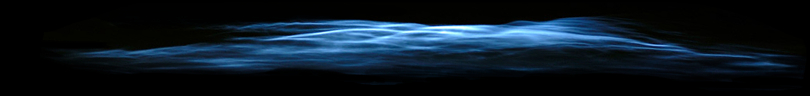
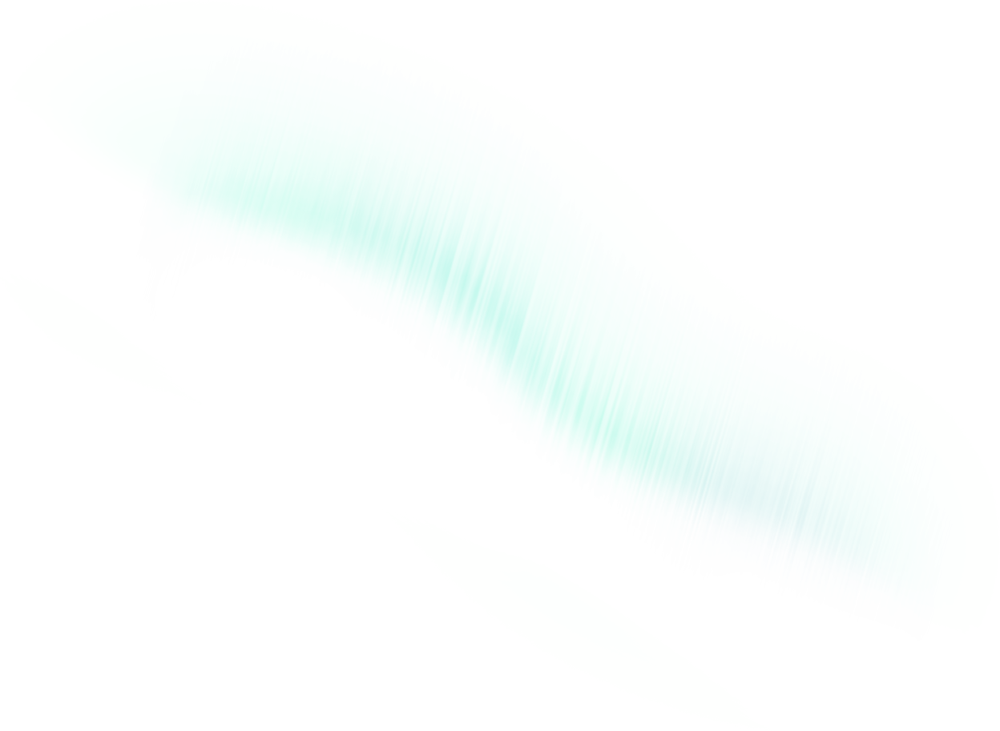
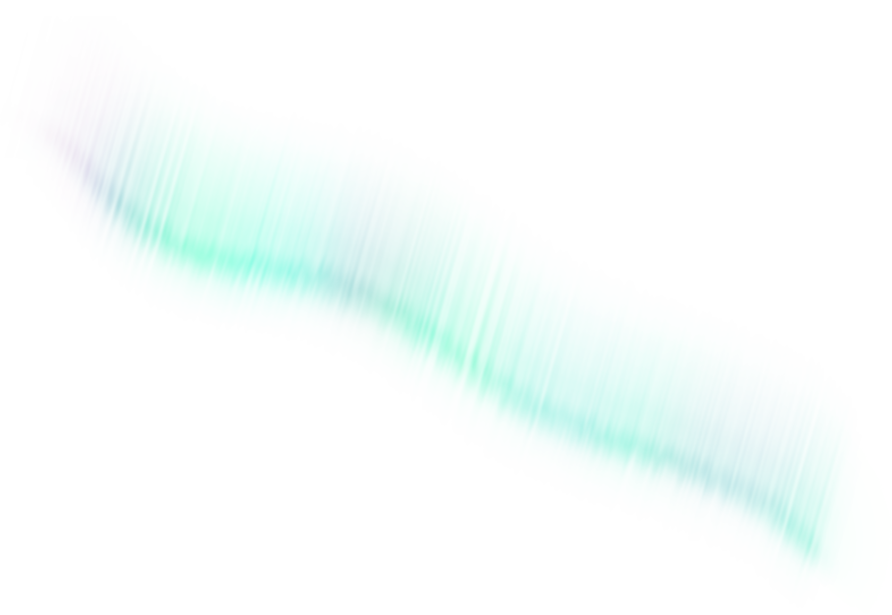
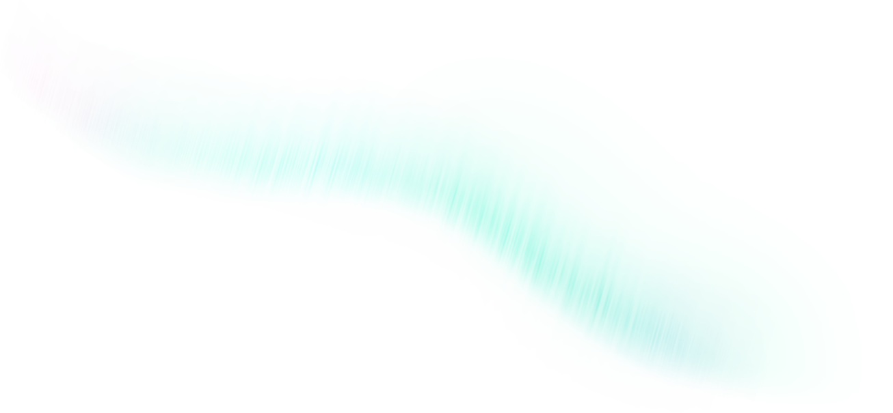
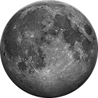

АТМОСФЕРА
100 км
20—25 км
Станция «Мир»
358 км
Исследовательская орбитальная станция.
Первая многомодульная обитаемая станция.
20 февраля 1986 — 23 марта 2001
Первая многомодульная обитаемая станция.
20 февраля 1986 — 23 марта 2001

Старфиш-прайм
400 км
Испытание ядерной бомбы в космосе.
Вывело из строя треть спутников на низкой орбите.
1,4 Мт
9 июля 1962
Вывело из строя треть спутников на низкой орбите.
1,4 Мт
9 июля 1962
Джемини-11
1372 км
Самый высокий пилотируемый полёт
после полёта на Луну.
Отрабатывали стыковку кораблей.
1966 год
после полёта на Луну.
Отрабатывали стыковку кораблей.
1966 год
2000 км — Верхняя граница низкой околоземной орбиты
Радиационный пояс Ван Аллена
Около 4000 км
Внутренний радиационный пояс Земли.
Из-за высокой радиации в этих высотах не проводят пилотируемых полётов.
Спутники на элептической орбите, которые проходят этот пояс несколько раз в день, быстро выходят из строя.
Из-за высокой радиации в этих высотах не проводят пилотируемых полётов.
Спутники на элептической орбите, которые проходят этот пояс несколько раз в день, быстро выходят из строя.
Астеройд 2004 TS26
6150 км — ближайшая точка к Земле
Один из астеройдов максимально приблизившихся к земле.
9 октября 2008 года
9 октября 2008 года
Внейшний радиационный пояс
Около 17 000 км
Спутники Глонасс
19 140 км
Глобальная навигационная спутниковая система.
24 спутника в трёх плоскостях.
C октября 1982 года
24 спутника в трёх плоскостях.
C октября 1982 года
Спутники GPS
20 200 км
Система глобального позиционирования.
31 спутник на шести орбитах.
Период обращения 11 часов 58 минут —
два оборота в сутки.
C февраля 1978 года
31 спутник на шести орбитах.
Период обращения 11 часов 58 минут —
два оборота в сутки.
C февраля 1978 года
Астеройд Дуэнде
27 743 км
Диаметр 30 м
Масса 40 000 тонн
Один из самых опасных для Земли.
Подлетел к Земле в один день с Челябинским метеоритом, но c ним не связан.
15 февраля 2013
Масса 40 000 тонн
Один из самых опасных для Земли.
Подлетел к Земле в один день с Челябинским метеоритом, но c ним не связан.
15 февраля 2013
Геостационарная орбита
35 786 км
Орбита, над экватором земли.
При движении по этой орбите спутник находиться над определённой точкой поверхности Земли
При движении по этой орбите спутник находиться над определённой точкой поверхности Земли
Орбита захоронения
36 021 км
На эту орбиту уводят спутники после окончания работ на геостацинарной орбите
Дизайнер
Константин Уланов
Арт-директор
Артём Горбунов
Сделано в Школе стажёров Бюро Горбунова
В одном пикселе 100 метров, в 1 км — 10 пикселей. Расстояние до Луны — 3 844 590 пикселя.
В левой части логарифмическая шкала. Каждая основная отметка больше предыдущей в 10 раз.
На такой шкале лучше различимы нижние слои атмосферы. На линейной шкале они бы заняли 10 пикселей.
После термопаузы температура фиксируется на 2000—3000°. Но на самом деле в космосе не жарко.
2000 градусов — это газокинетическая температура — пересчёт скорости движения молекул. То есть молекулы движуться как разогретые до 2000°.
Но на такой высоте уже почти нет вещества. Из-за этого молекулы не передают свою температуру космическим кораблям и спутникам.
На высоте около 2000—3500 км экзосфера переходит в ближнекосмический вакуум. Пространство заполнено редкими частицами водорода и космической пыли.
Человек может выжить в вакууме до 90 секунд.
В вакууме на человеке без скафандра буду вскипать слёзы, пот и слюна во рту.
Быстрое испарение воды охлаждает кожу и слизистую до 0°. Но это не представляет большой опасности.
Кровь не вскипает, но в ней и огранах образуются пузырьки газа. Это ведёт к повреждению тканей.
Нахождение в вакууме более 90 секунд фатально, реанимаци бесполезна.
Ещё в это пространство проникает электромагнитная и корпускулярная радиация солнца и галактики.
Эта радиация образует радиационный пояс Земли. Иногда его называют «радиационным поясом Ван Аллена».
Спутники, движущиеся по эллиптической орбите, пересекают радиационные слои несколько раз в день. Это сказывается на их износе.
Износившиеся спутники сходят с орбиты. Они превращаются в космический мусор.
Огромное количество мусора вращается на высотах от 400 до 2000 километров летают около 200-300 тысяч объектов общей массой 5000 тонн.
95% космических объектов вокруг земли — мусор: отработанные ступени ракет, не функционирующие спутники, осколки от взрывов и столкновений.
Космический мусор движется со скоростью около 10 км/с. При столкновении с космическим аппаратом или спутником выведет его из строя или полностью уничтожит.
Для большей безопасности полётов отработавшие спутники выводят на «орбиту захоронения».
Для геостационарной это орбита на 200 км выше неё. Так освобождается место на орбите и нахождение на ней становиться безопаснее.
Геостационарная орбита важна, потому что она удобна для постоянной связи со спутником. Спутник на ГСО всегда находится над одной точкой Земли на постоянной высоте. Антенна направленная на такой спутник не требует корректировки положения.
На геостационарной орбите расположены спутники телевидения, интернета и других средств связи.
Спутники на ГСО постепенно смещаются от заданного положения. Это происходит из-за неидеальной формы Земли и притяжения Луны и Солнца.
Для компенсации орбиты спутнику нужно топливо для манёвров. Запас топлива определяет срок жизни спутника.
Это же топливо расходуется для перехода на орбиту захоронения в конце срока службы.
15 февраля 2013 на Землю упал Челябинский метеорит.
В тот же день к земле подлетел астеройд, в четыре раза больший челябинского.
Он прошёл на расстоянии 27 743 км.
Это был один из самых опасных астероидов подлетавших к Земле.
Атмосфера заканчивается на высоте примерно 190 000 км. Там, где давление солнечного ветра превышает силу притяжения земли.
Это половина расстояния до Луны.
Свет проходит расстояние от Луны до Земли за 1,255 секунды.
А от Солнца до Земли добирается за 8 минут.
Расстояние от Земли до Луны вместит все остальные планеты солнечной системы.
Луна удаляется от Земли на 4 сантиметра в год.
Луна создаёт приливы на земле. Земля, вращаясь, разгоняет приливную волну быстрее вращения Луны.
Приливная волна, притягиваясь к Луне ускоряет её. С набором скорости Луна отдаляется от Земли.
Эти же приливные волны тормозят вращение Земли.
Земля будет замедляться, а Луна ускоряться до тех пор, пока земной день не совпадёт с месяцем.
Тогда Луна будет находиться над одной точкой Земли.

Выс., км
t, °C
Автопилот ↑